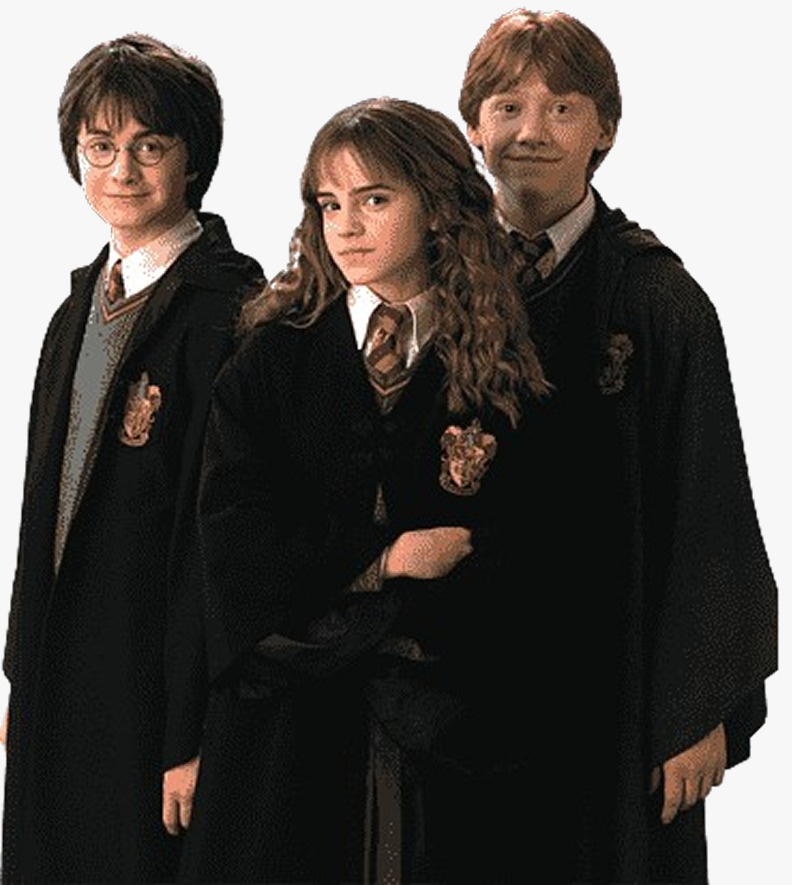

Hogwarts, mais do que simplesmente um castelo, mansão ou casa assombrada: uma escola de magia.
aviso: esta página pode conter spoilers
Conhecida por poucos, acessada por menos ainda: a escola da magia apareceu pela primeira vez em ‘Harry Potter e a Pedra Filosofal’. Harry recebeu um convite, diretamente da localidade em questão, por uma coruja branca, na casa de seus tios, a qual carregava consigo a carta de entrada à Hogwarts. Para acessá-la, o protagonista, com a bagagem pronta e os pré-requisitos concluídos, deveria ir à Estação King’s Cross, em Londres, onde fica a plataforma 9³/4 e pegar o trem para o local. E por mais incrível que pareça, essa plataforma só ficava disponível ao atravessar uma parede...
